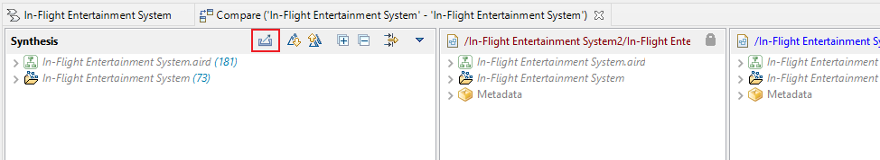
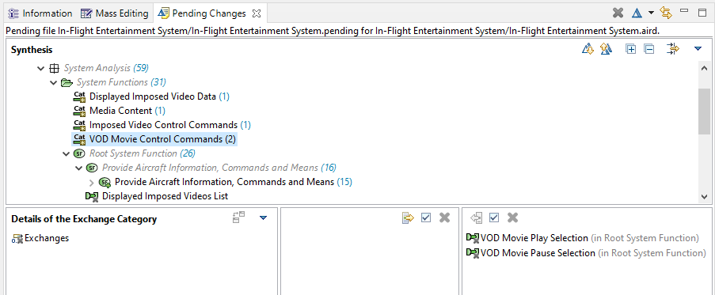
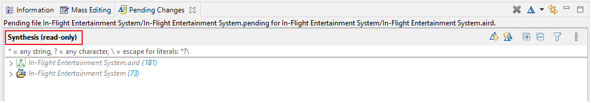
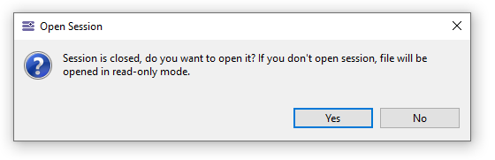
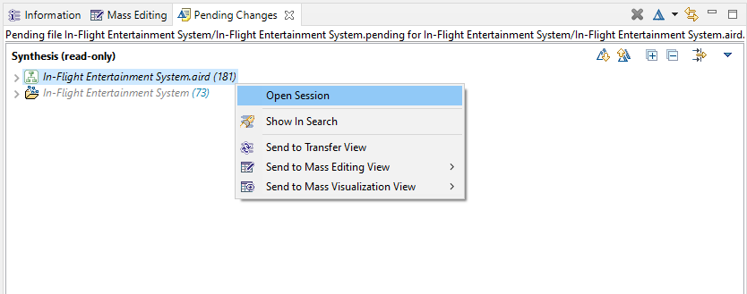
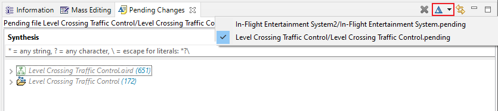
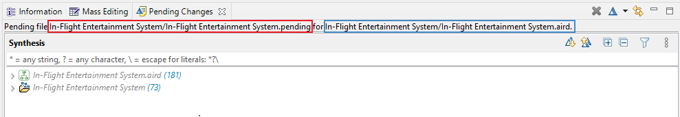
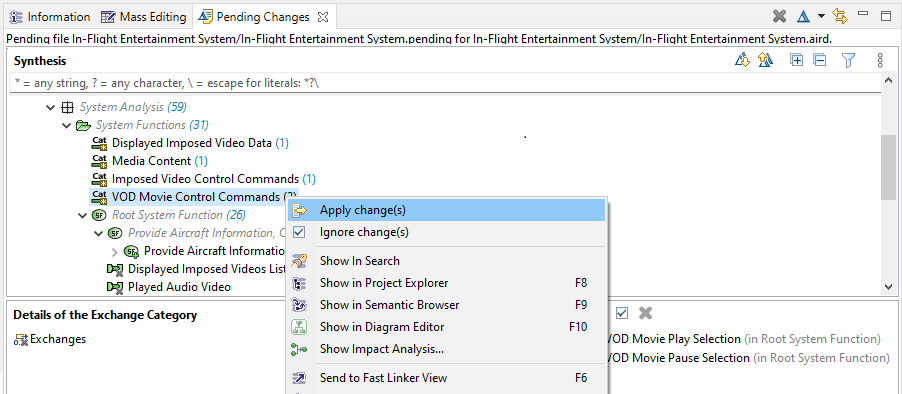

This guide assumes that you have a working knowledge of the Capella diff/merge tool.
If you are not familiar with it, please start reading the EMF Diff/Merge Guide.
When you compare two models, from the Compare editor you can use the action "Export as Pending Change" from the tool bar to save you changes in a separate file.
You can save the file in the project where you want to apply the changes later.

You can display the exported changes in a dedicated Pending Changes view by double-clicking the exported file.

Please note that compared to a classic diff / merge, there is a subtlety in the GUI at the level of opened pending changes files. When you open a pending file for a closed session, you will be able to see the differences without being able to accept or deny them. The file is opened in a read only mode (see screenshot below). As soon as the session is opened, you will switch automatically to editable mode and you can apply or deny changes.

Please note that when you try to open the pending file for a closed session a pop-up dialog will be open asking you if you want to open session, you can either open the session by clicking "Yes" of keep opening the file in read-only mode by clicking "No".

If the file is opened in read-only mode, you can select any object in the Pending changes view and right-click to open session to switch to editable mode.

You can open multiple pending files and switch between them using the drop down list of the action in the view toolbar menu. Also, You can close an opened pending file using the close button from the view toolbar menu.

In the view content description, you will see the path of the current opened pending file and the path of the file where changes are applicable.

Use the Pending Changes view as a ‘to do list’ of proposed changes: accept (apply) changes as they are, or dismiss them in favor of manual changes.
Since the Pending Changes view applies to an open model, it integrates naturally with existing Capella functionalities (Semantic Browser, etc.).
It enables users to better understand the impacts of a change before deciding to apply or dismiss it.
